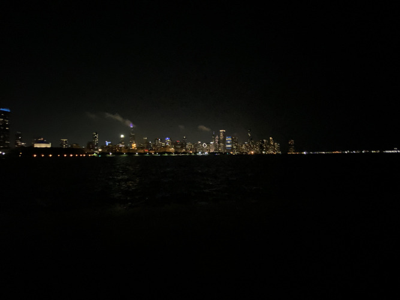
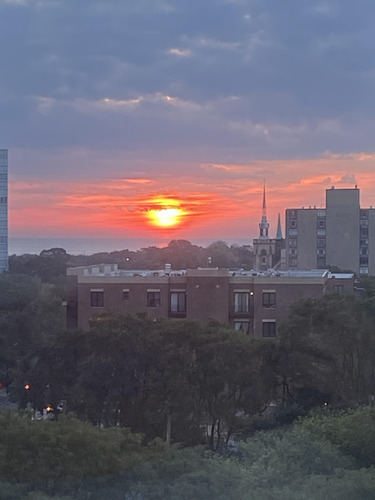
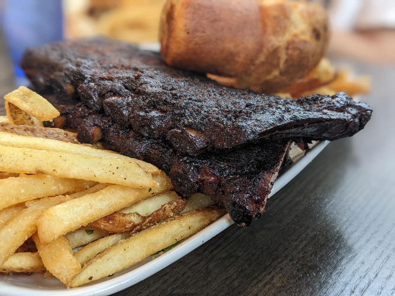
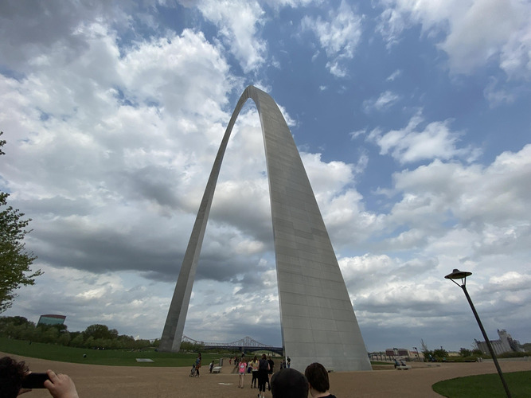
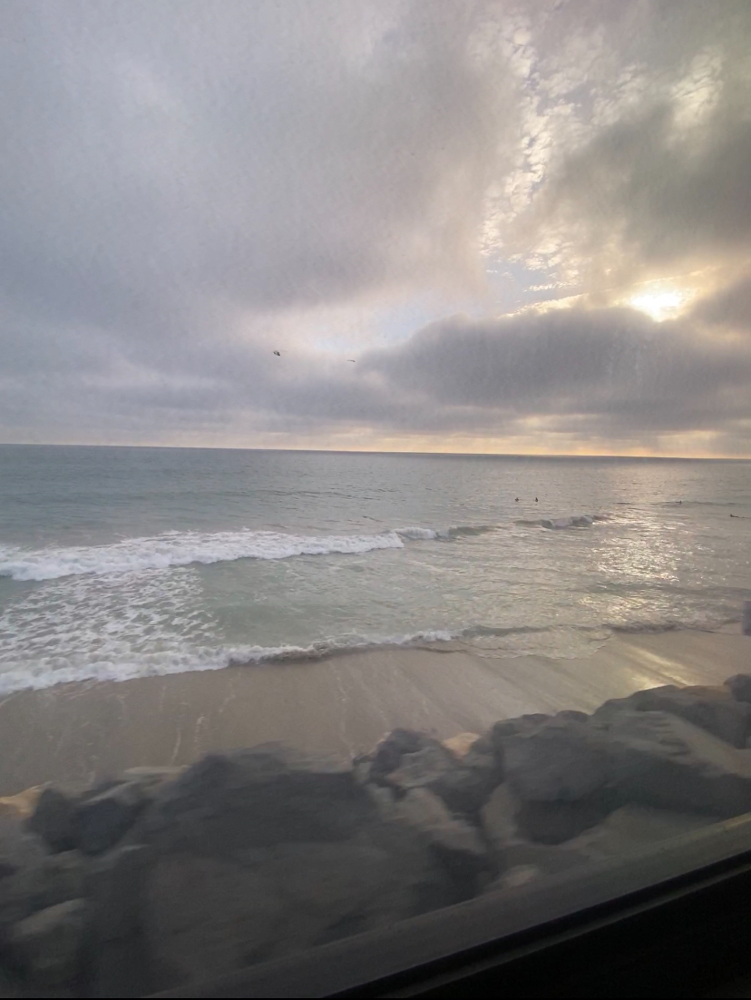

About Me
My name is Adrian Hamel, and I am an Information Technology and Management Major, minoring in Computer Science and Software Engineering.
Currently, I am a Platform DevOps Engineer CoOp at Vail Systems in Downtown Chicago, IL.
My previous job was a Level One Tech at Chicago Info Tech, and I fix a lot of chromebooks
Video of what I did at work
Adventures Section
I like to ride around Downtown Chicago at night on my erlectric Scooter and Divvy E-Bikes a lot.
I would go from Grant park all the way back to Illinois Tech for fun.
I would even go to the planetarium at night following along the Lakefront Trail to enjoy the Chicago Skyline and stars.

My previous dorm room faced the lake, I would always wake up early in the morning to view the beautiful sunrise.

During one of our finals week, me and a group of friends took a trip down to St. Louis by train.
We spent a long time getting there, but we ate great food and got to see many sights and landmarks.


On my own, after second year in summer, I took my first solo plane trip to California to visit friends.
I got to see many sights like the Hollywood sign, the Griffith Observatory, the Hollywood walk of fame, and many sights around Downtown Los Angeles.
I even took a detour along the Pacific Coast Highway to San Diego.
1 / 5

Hollywood Sign
2 / 5

Griffith Observatory
3 / 5

LA Angel Wings
4 / 5

Los Angeles taken from Griffith Observatory
5 / 5

Pacific Coast Highway
❮
❯